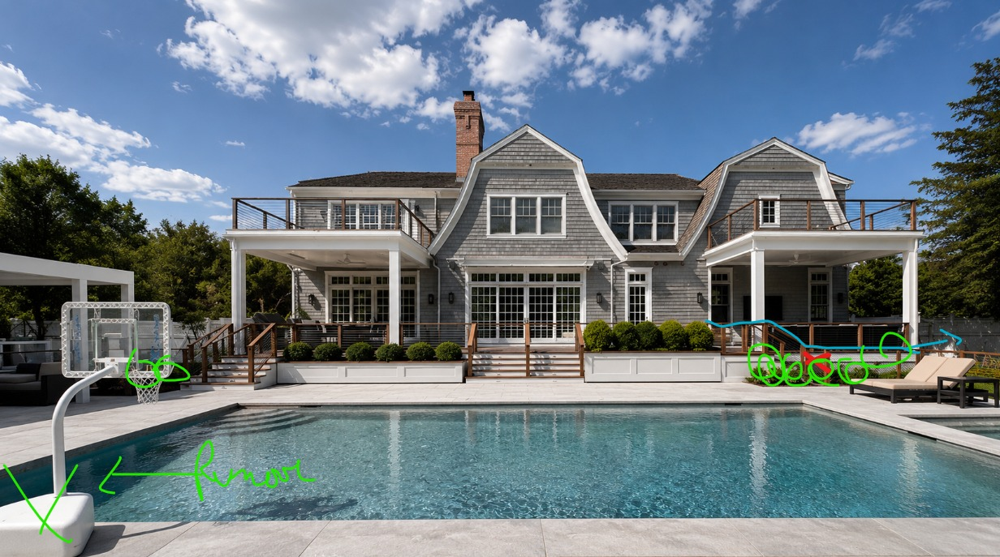
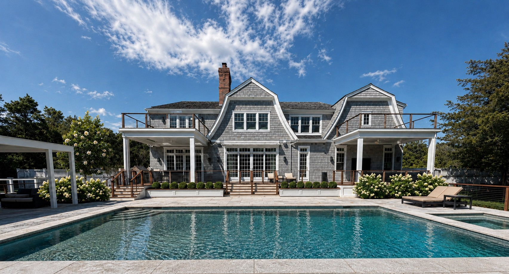

01 / Visualization study
Poolside Terrace
Contract review → height correction → revised views
Read the full studyFor Poolside Terrace, I analyzed a contractor’s proposal and caught a planter-height error that had carried into an early rendering. Site photographs, supplied markups, and a planting-plan detail helped connect the written specifications to the intended design.
The contract incorrectly listed one planter at 28″ high. Both planters were intended to be 18″ high, with different lengths. I identified the discrepancy during my proposal review and corrected the height in the later renderings.
- Listed in the contract
- 28″ high
- Corrected design intent
- 18″ high


